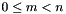
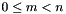
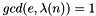
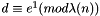
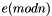

#include "include/jrsa.h"
Detailed Description
RSA CyptoSystem
see https://en.wikipedia.org/wiki/RSA_(cryptosystem)
RSA (Rivest–Shamir–Adleman) is one of the first public-key cryptosystems and is widely used for secure data transmission. In such a cryptosystem, the encryption key is public and it is different from the decryption key which is kept secret (private). In RSA, this asymmetry is based on the practical difficulty of the factorization of the product of two large prime numbers, the "factoring problem". The acronym RSA is made of the initial letters of the surnames of Ron Rivest, Adi Shamir, and Leonard Adleman, who first publicly described the algorithm in 1978. Clifford Cocks, an English mathematician working for the British intelligence agency Government Communications Headquarters (GCHQ), had developed an equivalent system in 1973, but this was not declassified until 1997
A user of RSA creates and then publishes a public key based on two large prime numbers, along with an auxiliary value. The prime numbers must be kept secret. Anyone can use the public key to encrypt a message, but with currently published methods, and if the public key is large enough, only someone with knowledge of the prime numbers can decode the message feasibly.[2] Breaking RSA encryption is known as the RSA problem. Whether it is as difficult as the factoring problem remains an open question. RSA is a relatively slow algorithm, and because of this, it is less commonly used to directly encrypt user data. More often, RSA passes encrypted shared keys for symmetric key cryptography which in turn can perform bulk encryption-decryption operations at much higher speed
The idea of an asymmetric public-private key cryptosystem is attributed to Whitfield Diffie and Martin Hellman, who published this concept in 1976. They also introduced digital signatures and attempted to apply number theory. Their formulation used a shared-secret-key created from exponentiation of some number, modulo a prime number. However, they left open the problem of realizing a one-way function, possibly because the difficulty of factoring was not well-studied at the time
Ron Rivest, Adi Shamir, and Leonard Adleman at the Massachusetts Institute of Technology made several attempts, over the course of a year, to create a one-way function that was hard to invert. Rivest and Shamir, as computer scientists, proposed many potential functions, while Adleman, as a mathematician, was responsible for finding their weaknesses. They tried many approaches including "knapsack-based" and "permutation polynomials". For a time, they thought what they wanted to achieve was impossible due to contradictory requirements.[4] In April 1977, they spent Passover at the house of a student and drank a good deal of Manischewitz wine before returning to their homes at around midnight. Rivest, unable to sleep, lay on the couch with a math textbook and started thinking about their one-way function. He spent the rest of the night formalizing his idea, and he had much of the paper ready by daybreak. The algorithm is now known as RSA – the initials of their surnames in same order as their paper
Clifford Cocks, an English mathematician working for the British intelligence agency Government Communications Headquarters (GCHQ), described an equivalent system in an internal document in 1973. However, given the relatively expensive computers needed to implement it at the time, RSA was considered to be mostly a curiosity and, as far as is publicly known, was never deployed. His discovery, however, was not revealed until 1997 due to its top-secret classification.
Operation
The RSA algorithm involves four steps: key generation, key distribution, encryption and decryption
A basic principle behind RSA is the observation that it is practical to find three very large positive integers  ,
,  and
and  such that with modular exponentiation for all integers
such that with modular exponentiation for all integers  (with ):
(with ):
and that even knowing and or even it can be extremely difficult to find
In addition, for some operations it is convenient that the order of the two exponentiations can be changed and that this relation also implies:
RSA involves a public key and a private key. The public key can be known by everyone, and it is used for encrypting messages. The intention is that messages encrypted with the public key can only be decrypted in a reasonable amount of time by using the private key. The public key is represented by the integers and ; and, the private key, by the integer (although is also used during the decryption process. Thus, it might be considered to be a part of the private key, too). represents the message (previously prepared with a certain technique explained below)
Key generation
The keys for the RSA algorithm are generated the following way:
- Choose two distinct prime numbers p and q
- For security purposes, the integers p and q should be chosen at random, and should be similar in magnitude but differ in length by a few digits to make factoring harder Prime integers can be efficiently found using a primality test
- Compute
- n is used as the modulus for both the public and private keys. Its length, usually expressed in bits, is the key length
- Compute , where
 is Carmichael's totient function. This value is kept private
is Carmichael's totient function. This value is kept private - Choose an integer such that and ; i.e., and are coprime
- Determine as ; i.e., is the modular multiplicative inverse of
- This means: solve for the equation
- having a short bit-length and small Hamming weight results in more efficient encryption – most commonly . However, much smaller values of (such as 3) have been shown to be less secure in some settings
- is released as the public key exponent
- is kept as the private key exponent
- This means: solve for
The public key consists of the modulus and the public (or encryption) exponent . The private key consists of the private (or decryption) exponent , which must be kept secret. , and must also be kept secret because they can be used to calculate
In the original RSA paper, the Euler totient function is used instead of for calculating the private exponent . Since is always divisible by the algorithm works as well
Key distribution
Suppose that Bob wants to send information to Alice. If they decide to use RSA, Bob must know Alice's public key to encrypt the message and Alice must use her private key to decrypt the message. To enable Bob to send his encrypted messages, Alice transmits her public key to Bob via a reliable, but not necessarily secret, route. Alice's private key ( ) is never distributed
Encryption
After Bob obtains Alice's public key, he can send a message  to Alice. To do it, he first turns (strictly speaking, the un-padded plaintext) into an integer (strictly speaking, the padded plaintext), such that by using an agreed-upon reversible protocol known as a padding scheme. He then computes the ciphertext
to Alice. To do it, he first turns (strictly speaking, the un-padded plaintext) into an integer (strictly speaking, the padded plaintext), such that by using an agreed-upon reversible protocol known as a padding scheme. He then computes the ciphertext  , using Alice's public key , corresponding to
, using Alice's public key , corresponding to
This can be done reasonably quickly, even for 500-bit numbers, using modular exponentiation. Bob then transmits to Alice
Decryption
Alice can recover from by using her private key exponent by computing
Given , she can recover the original message by reversing the padding scheme
Signing messages
Suppose Alice uses Bob's public key to send him an encrypted message. In the message, she can claim to be Alice but Bob has no way of verifying that the message was actually from Alice since anyone can use Bob's public key to send him encrypted messages. In order to verify the origin of a message, RSA can also be used to sign a message
Suppose Alice wishes to send a signed message to Bob. She can use her own private key to do so. She produces a hash value of the message, raises it to the power of (as she does when decrypting a message), and attaches it as a "signature" to the message. When Bob receives the signed message, he uses the same hash algorithm in conjunction with Alice's public key. He raises the signature to the power of  (as he does when encrypting a message), and compares the resulting hash value with the message's actual hash value. If the two agree, he knows that the author of the message was in possession of Alice's private key, and that the message has not been tampered with since
Padding schemes
To avoid these problems, practical RSA implementations typically embed some form of structured, randomized padding into the value m before encrypting it. This padding ensures that m does not fall into the range of insecure plaintexts, and that a given message, once padded, will encrypt to one of a large number of different possible ciphertexts
Standards such as PKCS#1 have been carefully designed to securely pad messages prior to RSA encryption. Because these schemes pad the plaintext m with some number of additional bits, the size of the un-padded message must be somewhat smaller. RSA padding schemes must be carefully designed so as to prevent sophisticated attacks which may be facilitated by a predictable message structure. Early versions of the PKCS#1 standard (up to version 1.5) used a construction that appears to make RSA semantically secure
Secure padding schemes such as RSA-PSS are as essential for the security of message signing as they are for message encryption
Security
The security of the RSA cryptosystem is based on two mathematical problems: the problem of factoring large numbers and the RSA problem. Full decryption of an RSA ciphertext is thought to be infeasible on the assumption that both of these problems are hard, i.e., no efficient algorithm exists for solving them. Providing security against partial decryption may require the addition of a secure padding scheme
Importance of strong random number generation
A cryptographically strong random number generator, which has been properly seeded with adequate entropy, must be used to generate the primes  and
and 
Strong random number generation is important throughout every phase of public key cryptography. For instance, if a weak generator is used for the symmetric keys that are being distributed by RSA, then an eavesdropper could bypass RSA and guess the symmetric keys directly
For API information:
- See also
- ProtocolPP::jrsa
- ProtocolPP::jrand
- ProtocolPP::jenum
For Additional Documentation:
The source code contained or described herein and all documents related to the source code (herein called "Material") are owned by John Peter Greninger and Sheila Rocha Greninger. Title to the Material remains with John Peter Greninger and Sheila Rocha Greninger. The Material contains trade secrets and proprietary and confidential information of John Peter Greninger and Sheila Rocha Greninger. The Material is protected by worldwide copyright and trade secret laws and treaty provisions. No part of the Material may be used, copied, reproduced, modified, published, uploaded, posted, transmitted, distributed, or disclosed in any way without prior express written consent of John Peter Greninger and Sheila Rocha Greninger (both are required)
No license under any patent, copyright, trade secret, or other intellectual property right is granted to or conferred upon you by disclosure or delivery of the Materials, either expressly, by implication, inducement, estoppel, or otherwise. Any license under such intellectual property rights must be express and approved by John Peter Greninger and Sheila Rocha Greninger in writing
Licensing information can be found at www.protocolpp.com/license with use of the binary forms permitted provided that the following conditions are met:
- Redistributions in binary form must reproduce the above copyright notice, this list of conditions and the following disclaimer in the documentation and/or other materials provided with the distribution
- Any and all modifications must be returned to John Peter Greninger at GitHub.com https://github.com/jpgreninger/protocolpp for evaluation. Inclusion of modifications in the source code shall be determined solely by John Peter Greninger. Failure to provide modifications shall render this license NULL and VOID and revoke any rights to use of Protocol++®
- Commercial use (incidental or not) requires a fee-based license obtainable at www.protocolpp.com/shop
- Academic or research use requires prior written and notarized permission from John Peter and Sheila Rocha Greninger
Use of the source code requires purchase of the source code. Source code can be purchased at www.protocolpp.com/shop
- US Copyrights at https://www.copyright.gov/
- TXu002059872 (Version 1.0.0)
- TXu002066632 (Version 1.2.7)
- TXu002082674 (Version 1.4.0)
- TXu002097880 (Version 2.0.0)
- TXu002169236 (Version 3.0.1)
- TXu002182417 (Version 4.0.0)
- TXu002219402 (Version 5.0.0)
- TXu002272076 (Version 5.2.1)
- TXu002383571 (Version 5.4.3)
The name of its contributor may not be used to endorse or promote products derived from this software without specific prior written permission and licensing
THIS SOFTWARE IS PROVIDED BY THE COPYRIGHT HOLDER AND CONTRIBUTOR "AS IS" AND ANY EXPRESS OR IMPLIED WARRANTIES, INCLUDING, BUT NOT LIMITED TO, THE IMPLIED WARRANTIES OF MERCHANTABILITY AND FITNESS FOR A PARTICULAR PURPOSE ARE DISCLAIMED. IN NO EVENT SHALL THE COPYRIGHT OWNER OR CONTRIBUTORS BE LIABLE FOR ANY DIRECT, INDIRECT, INCIDENTAL, SPECIAL, EXEMPLARY, OR CONSEQUENTIAL DAMAGES (INCLUDING, BUT NOT LIMITED TO, PROCUREMENT OF SUBSTITUTE GOODS OR SERVICES; LOSS OF USE, DATA, OR PROFITS; OR BUSINESS INTERRUPTION) HOWEVER CAUSED AND ON ANY THEORY OF LIABILITY, WHETHER IN CONTRACT, STRICT LIABILITY, OR TORT (INCLUDING NEGLIGENCE OR OTHERWISE) ARISING IN ANY WAY OUT OF THE USE OF THIS SOFTWARE, EVEN IF ADVISED OF THE POSSIBILITY OF SUCH DAMAGE
The documentation for this class was generated from the following file:
- include/jrsa.h